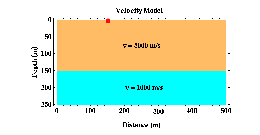
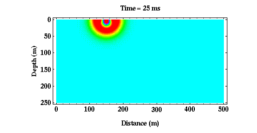
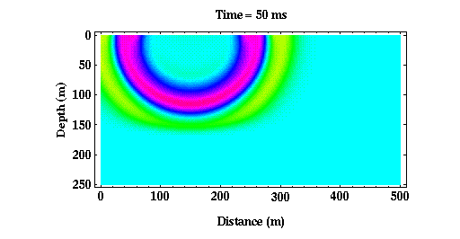
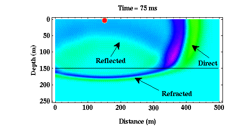

Wave Interaction with Boundaries
Thus far we have considered body wave propagation through media that has a constant speed of seismic wave propagation. What happens if the media consists of layers, each with a different speed of seismic wave propagation?
Consider the simple model shown below.

Although more complex than the homogeneous models considered previously, this model is still very simple, consisting of a single layer over a halfspace. In this particular example, the speed* at which seismic waves propagate in the layer is faster than the speed at which they propagate in the halfspace. Let's now watch the seismic waves propagate through this medium and see how they interact with the boundary at 150 meters. Shown below are three snapshots of the seismic wave at times of 25, 50, and 75 ms**.



| Click Here for Animated Version |
|---|
From 0 to 50 ms, the wave propagates solely within the upper layer. Thus, our pictures of the wavefield look identical to those generated previously. After 50 ms, the wave begins to interact with the boundary at 150 meters depth. Part of the wave has penetrated the boundary. The portion of the wavefield that has penetrated the boundary is referred to as the refracted wave***. Also notice that part of the wave has bounced off, or reflected off, of the boundary. This part of the wavefield is referred to as the reflected wave***. This is the portion of the wavefield that is used in reflection surveying. Finally, part of the wavefield has not interacted with the boundary at all. This part of the wavefield is called the direct wave.
There are several interesting features to note about the refracted arrival.
- First, notice that the wavefront defining the refracted arrival is still circular, but its radius is no longer centered on the source. Geophysicists would describe this as a change in the curvature of the wavefront.
- Second, notice that the apparent wavelength of the refracted arrival is much shorter than the direct arrival.
Both of these phenomena are related to the presence of the discontinuity. Remember that the period of a wave is related to its wavelength through the speed at which the wave propagates through the medium. The wavelength is equal to the speed times the period. Thus, if the period of the wave remains constant and the speed of the medium decreases, the wavelength of the wave must also decrease.
The change in curvature of the wavefront as the wave passes through the interface implies that the raypaths describing the direction of propagation of the wave change direction through the boundary. This change in direction of the raypath as it crosses a boundary is described by a well-known law known as Snell's Law.
Finally, of fundamental importance to note is that if you were observing the ground's motion from any point on the Earth's surface, you would observe two distinct waves. Initially, you would observe an arrival that is large in amplitude and that is the direct wave. Then, some time later, you would observe a smaller amplitude reflected wave. The time difference between your observation of these two arrivals is dependent on your distance from the source, the speed of wave propagation in the layer, and the depth to the boundary. Thus, by observing this time difference we may be able to learn something about the subsurface structure.
*Unless otherwise indicated, we will now assume that we are looking at P wave propagation through the Earth. Thus, the speeds indicated are appropriate for P waves.
**ms stands for milliseconds. One millisecond is one one-thousandth of a second.
***We have simplified the situation a bit here. In general, when a P wave interacts with a boundary, it generates not only a reflected and a refracted P wave, but it can also generate a reflected and a refracted S wave. Conversely, S waves that interact with boundaries can generate reflected and refracted P waves. These conversions of P waves to S waves and S waves to P waves are called mode conversions. We will assume that no mode conversions occur. For refraction surveys, this is not a seriously flawed assumption, because again, we are considering only the time of arrival of the initial wave. P to S wave mode conversions will never be the first arrival. For reflection surveys, unless we were interested in recording S wave arrivals or mode conversions, we design our survey and choose the recording equipment to minimize their effects.
Seismology
- Simple Earth Model: Low-Velocity Layer Over a Halfspacepg 11
- Head Wavespg 12
- Records of Ground Motionpg 13
- Travel-time Curves for a Simple Earth Modelpg 14
- First Arrivalspg 15
- Determining Earth Structure from Travel Timespg 16
- Derivation of Travel Time Equationspg 17
- High-Velocity Layer Over a Halfspace: Reprisepg 18
- Picking Times of Arrivalspg 25
- Wave Propagation with Multiple Horizontal Layerspg 26
- Travel Time Curves from Multiple Horizontalpg 27
- Hidden Layerspg 28
- Head Waves from a Dipping Layer: Shooting Down Dippg 29
- Head Waves from a Dipping Layer: Shooting Up Dippg 30
- A Field Procedure for Recognizing Dipping Bedspg 31
- Estimating Dips and Depths from Travelpg 32